Scots pine
Norrfällsviken · Hole 4 · tee · 24.3 m from tree
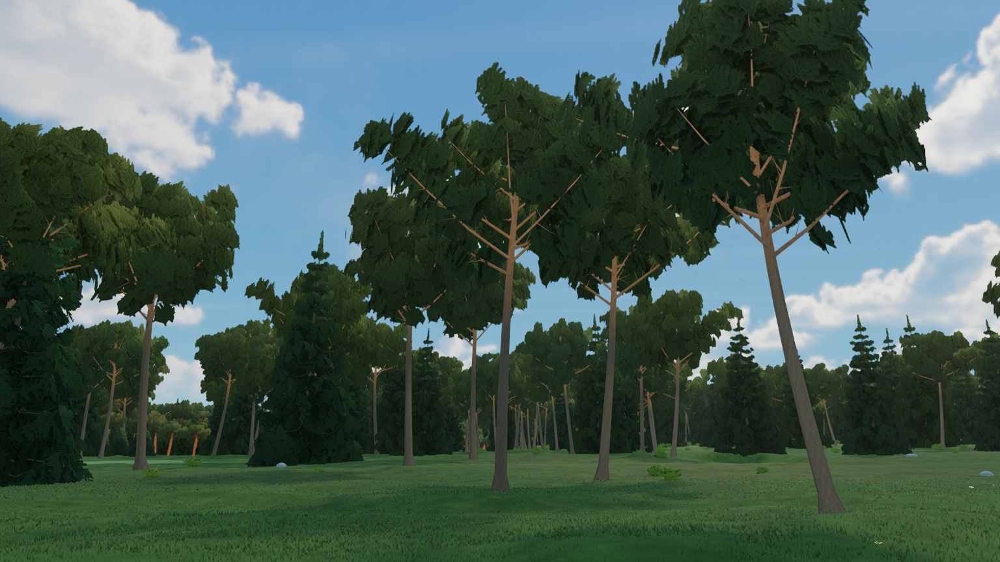
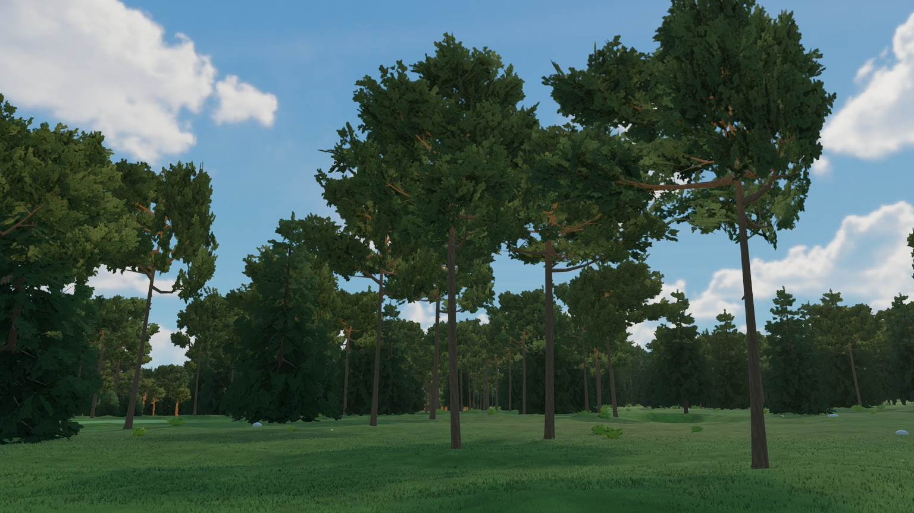
95th-percentile frame time 8.8 → 9.2 ms. GPU median 0.8 → 0.8 ms.
Drag each divider to compare the earlier build on the left with the release on the right. Every pair uses the same surveyed tee or fairway position, the same daylight preset and a 1.65 m eye height.
Watch the spruce, oak and treeline passes side by side · 12 seconds
Norrfällsviken · Hole 4 · tee · 24.3 m from tree


95th-percentile frame time 8.8 → 9.2 ms. GPU median 0.8 → 0.8 ms.
Norrfällsviken · Hole 8 · tee · 6.1 m from tree
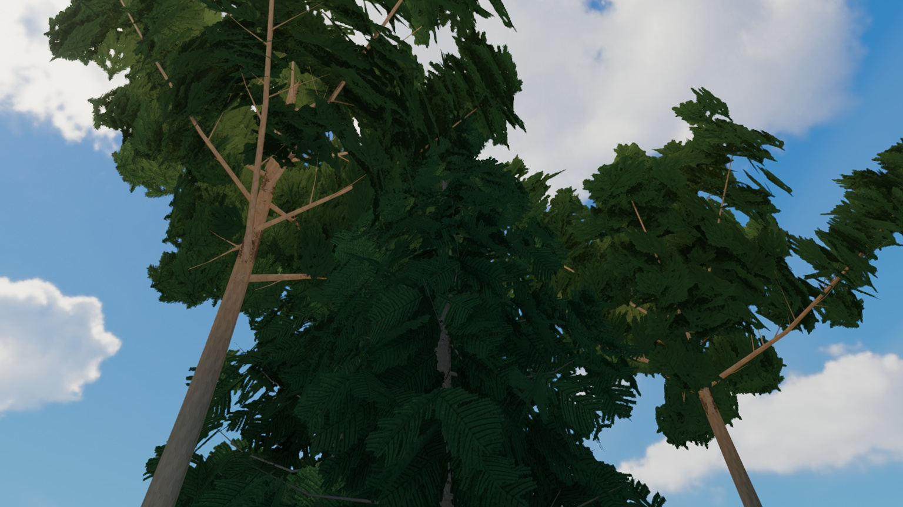
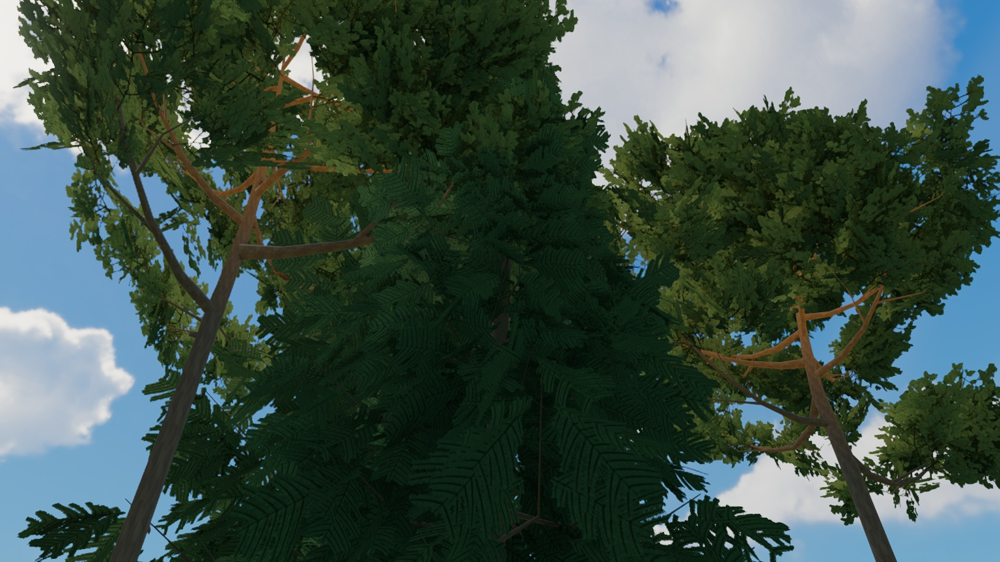
95th-percentile frame time 5.9 → 5.5 ms. GPU median 0.7 → 0.8 ms.
Norrfällsviken · Hole 12 · fairway · 48.9 m from tree
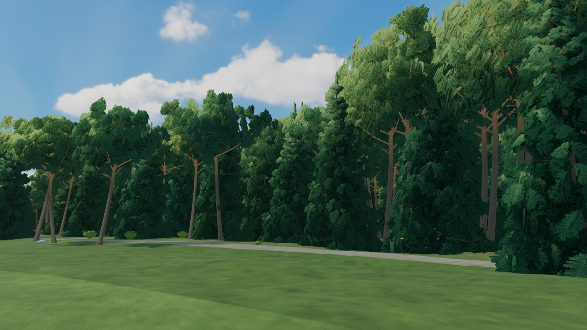
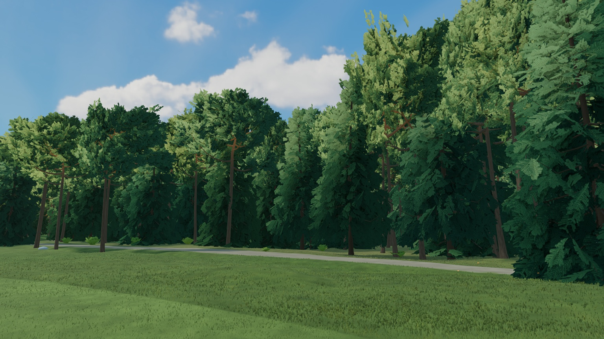
95th-percentile frame time 10.3 → 8.7 ms. GPU median 0.7 → 0.7 ms.
Bro Hof Stadium · Hole 2 · tee · 36.3 m from tree
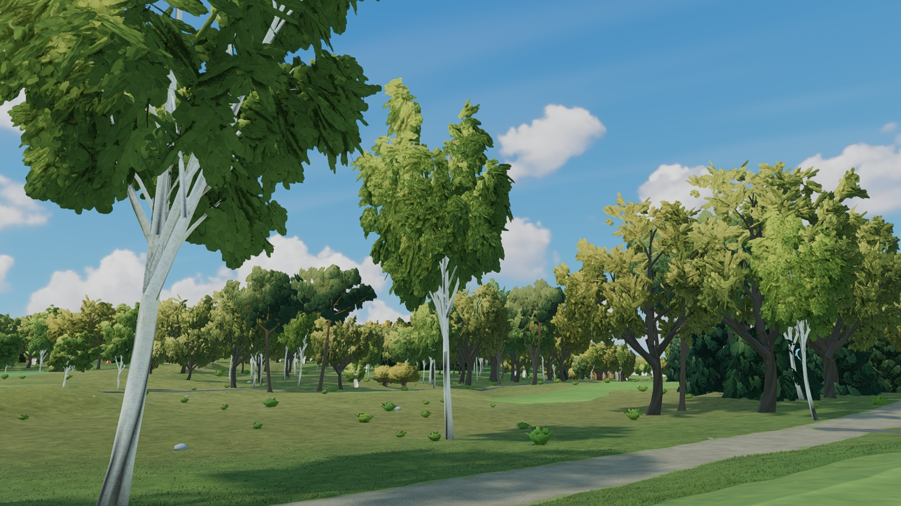
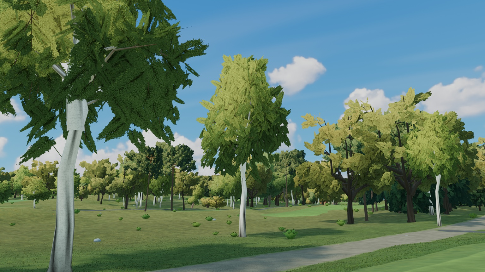
95th-percentile frame time 9.5 → 10.6 ms. GPU median 0.5 → 0.6 ms.
Bro Hof Stadium · Hole 1 · fairway · 12.4 m from tree
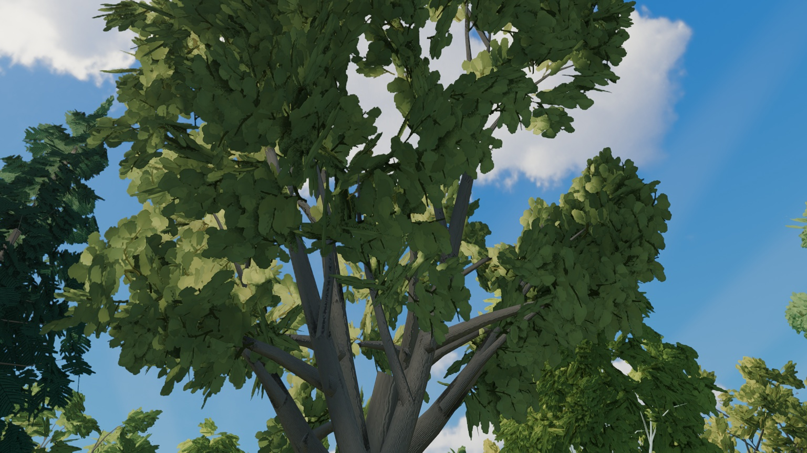
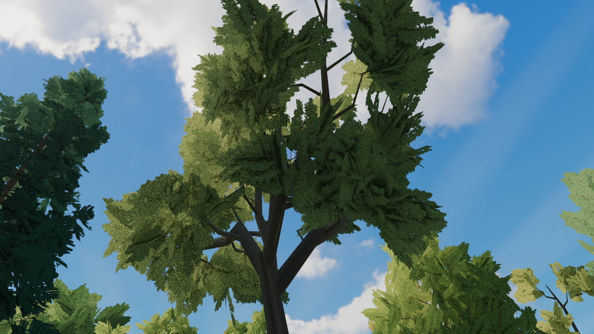
95th-percentile frame time 9.9 → 9.7 ms. GPU median 0.5 → 0.5 ms.
Bro Hof Stadium · Hole 2 · fairway · 29.8 m from tree
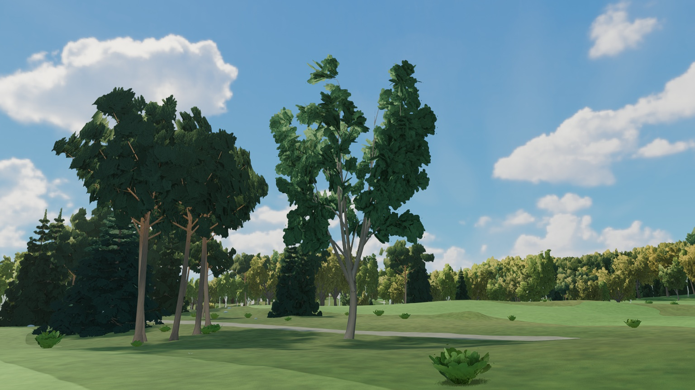
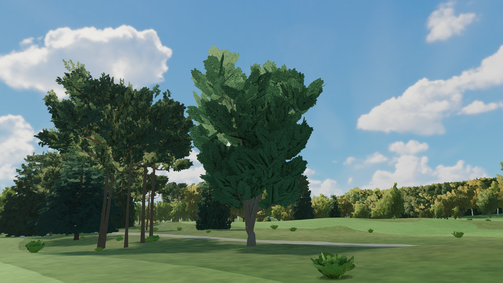
95th-percentile frame time 10.5 → 10.7 ms. GPU median 0.6 → 0.6 ms.
Visby · Hole 12 · fairway · 19.3 m from tree
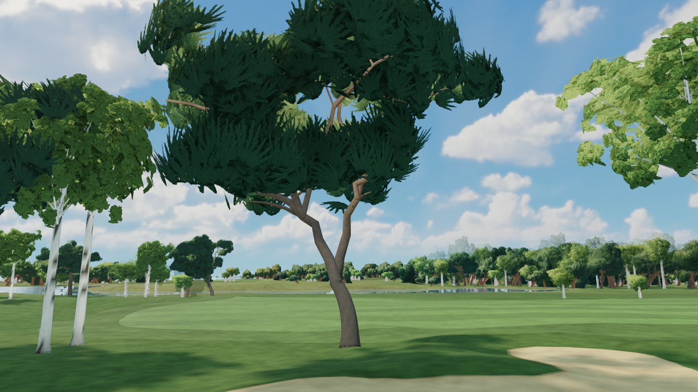
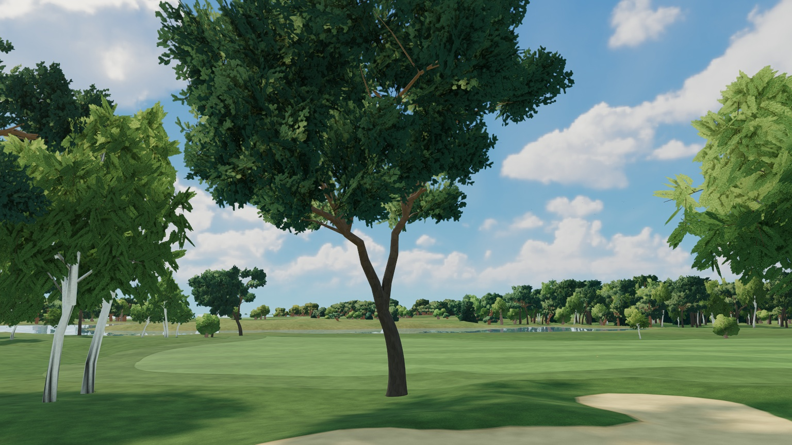
95th-percentile frame time 10.0 → 8.3 ms. GPU median 0.6 → 0.7 ms.
These two earlier playing-height comparisons follow the ball from the tee and into the green complexes.
Frame times were recorded on an NVIDIA GeForce RTX 5080 Laptop GPU. The phone-sized measurements use a 393 × 852 viewport on that same laptop.